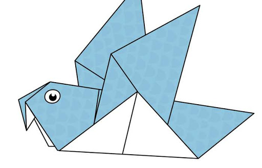

Origami Website Designs Part 1
Origami Designs
Origami Animals and Fun Facts
Camel

Interesting Facts About Camel
- Camels are Domestic Animals
- Camels can go without water for 7 months
- Camels live in hot locations
panda

Interesting Facts About Panda
- Pandas eat bamboos
- Pandas are endangered animals
- Pandas have black and white fur
Teddy

Interesting Facts About Teddy
- Teddies are fluffy
- Teddy bears are there in soo many colours
- Many babaies like teddy bears
Pigeon

Interesting Facts About Pigeon
- Pigeons are incredibly complex and intelligent animals.
- Pigeons are highly sociable animals.
- Pigeons are renowned for their outstanding navigational abilities.
chameleon

Interesting Facts About chameleon
- CHAMELEONS vary wildy in terms of size.
- Thier feet work like salad tongs
- samller CHAMELEONS have faster tonges
Flying cicda

Interesting Facts About flying-cicada
- Cicadas can survive a huge fall as babies, or nymphs
- The loud whirring or buzzing sound you hear is an all-male cicada chorus.
- Most of them have red-orange eyes.